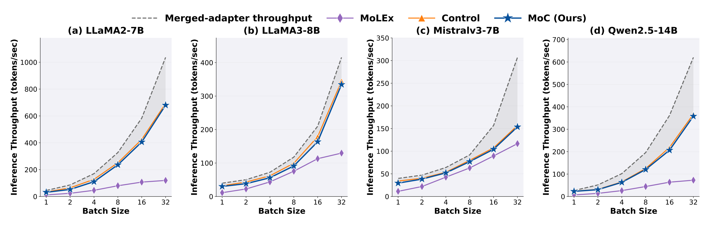
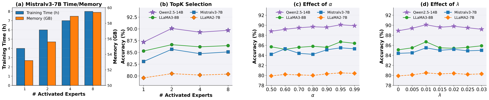
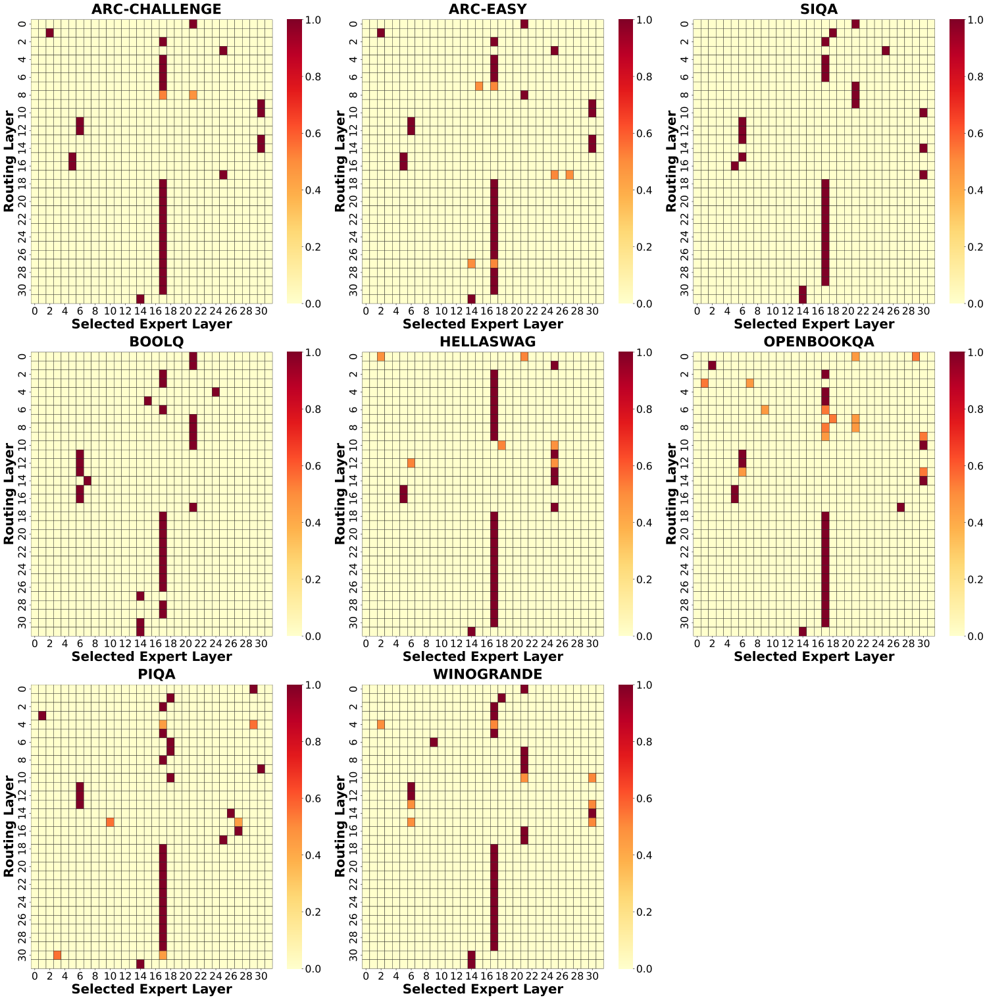
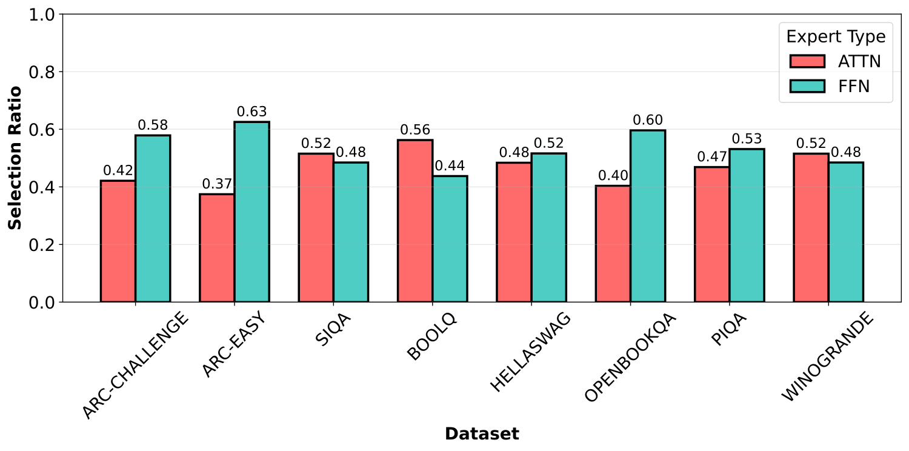
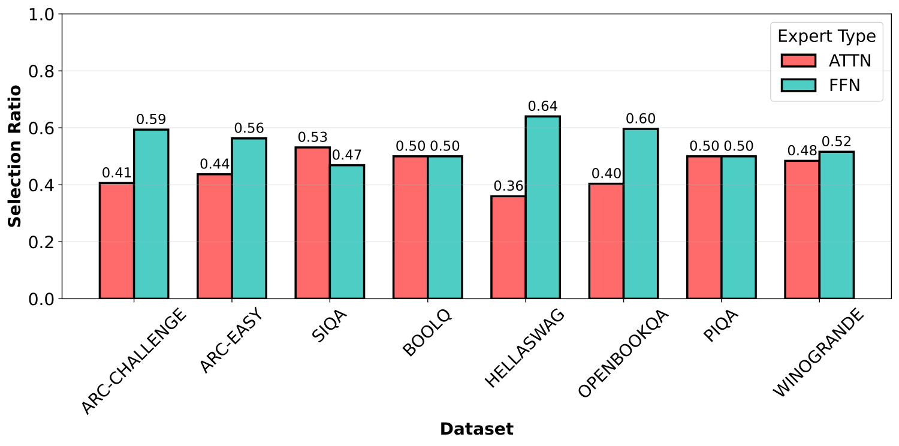

State-based fine-tuning has emerged as a compelling alternative to weight-based adaptation for transformers. It updates lightweight controls into states rather than model weights, offering substantial memory savings while retaining parameter efficiency. However, most existing state-based methods apply only per-block control updates, which limits inter-block information exchange and restricts representational adaptation. Meanwhile, prior mechanisms that enable cross-block communication often introduce considerable computational overhead, reducing their practicality for efficient fine-tuning. We introduce Mixture-of-Control (MoC), an efficient cross-layer communication mechanism that adaptively integrates local and global control signals to enhance representation learning during adaptation. MoC treats block-wise control states as experts in a sparse mixture-of-experts process, enabling efficient communication across transformer blocks. Experiments on 33 datasets and 10 pretrained models across diverse transformer-based benchmarks demonstrate that MoC consistently outperforms existing state-based fine-tuning methods while maintaining comparable efficiency in memory and compute.
LoRA variants and state-based methods such as Parallel Control adapt each block in isolation. With weak global coordination across depth, structured representation adaptation is limited.
MoLEx mixes layers by re-running pretrained blocks, which adds extra forward passes. On Qwen2.5-14B it needs 124.8 GB and 20.3 h of training, versus 62.1 GB and 9.4 h for LoRA.
“How can state-based fine-tuning capture deep cross-layer interactions without sacrificing its core advantage, memory efficiency?”
Viewed through control theory, a transformer forward pass is a discretized feedback system. The pretrained block supplies the intrinsic dynamics, and a low-rank adapter acts as the control term. MoC lets that control come both from the block itself and from other blocks.
Here $g_{h_t}$ is a control borrowed from another block $h_t$. Setting $h_t = t$ recovers standard state-based tuning, and $h_t \neq t$ enables cross-block communication through lightweight low-rank controls instead of full-block reuse.
The control modules $\{g_k\}_{k=1}^{L}$ of all blocks form one expert pool. A single gating matrix $\mathbf{W}_{\text{gate}}$, shared across layers, routes each block's state to its Top-$K$ experts. A load-balancing loss keeps expert usage even. Training uses batch-level routing, which aggregates token scores by mean or mode. At inference, each sample is routed from its own prefix.
Under mild assumptions, MoC keeps MoLEx's expressivity and is provably better behaved than block-local Parallel Control. Its forward dynamics are more stable, its gradients flow better, and its representation error is lower.
If $\alpha > \tfrac12$ and $z_1 = x_1$, there exist controls $g_k$ that reproduce the MoLEx trajectory. The match is exact for linear $f_k$, and the error vanishes for smooth nonlinear $f_k$ under small perturbations $\|\Delta W'_t\| < \xi$.
With the routed magnitude $\beta_K(x_t)=\sum_{k\in S_K}\pi_k\beta_k$ and $\mathbb{E}[\beta_K\mid x_t]<\beta_t$, which the load-balancing loss encourages, MoC's expected growth factor is strictly smaller:
Each layerwise Jacobian norm has a tighter bound, $M_t \le M_t^c$. The bound on the backpropagated product shrinks with depth accordingly:
Mixing several routed experts brings the control signal closer to the task-optimal signal $\Delta W^* x$ than block-local control alone:
Commonsense reasoning is shown here as the representative benchmark: 8 datasets (BoolQ, PIQA, SIQA, HellaSwag, WinoGrande, ARC-e/c, OBQA) on four LLM backbones. MoC is compared with LoRA, DoRA, MoLEx, FacT_TK, StructLoRA, FlexLoRA, and Parallel Control (“Control”). Each column's best accuracy is in bold. Small numbers show the change relative to LoRA. * marks previously published numbers. Results on GLUE (RoBERTa, DeBERTa) and VTAB-1K (ViT-Tiny, ViT-Base), where MoC also achieves the best average, are in the paper.
MoLEx communicates across layers by re-running pretrained blocks. MoC exchanges only lightweight control states, so it needs about half the GPU memory, trains 2.5× faster, and gains +2.3 points in average accuracy. Under a matched parameter budget (paper appendix), the gap is 116.3 GB vs. 61.3 GB and +2.5 points.


Mistralv3-7B-Instruct. All communication variants beat local Control, and adaptive routing with load balancing adds +1.1 points on top.
Average commonsense accuracy. FFN control beats attention-only, and a shared ATTN+FFN gate is best.
Mistralv3-7B-Instruct. More groups mean smaller routing pools. A broader pool improves accuracy at almost the same cost.
Routing maps for LLaMA3-8B show that MoC does not stay with the current layer's control. It often selects experts from distant layers, and the patterns differ by task, so the model learns to aggregate cross-layer information.


(a) Cross-type routing when the local control comes from Attention blocks

(b) Cross-type routing when the local control comes from FFN blocks
@inproceedings{nguyen2026mixture,
title = {Mixture-of-Control: State-Aware Fine-Tuning for Transformer-based Models},
author = {Nguyen, Duc-Anh and Luu, Tien Ngoc and Pham, Tung and Tran, Toan},
booktitle = {Advances in Neural Information Processing Systems (NeurIPS)},
year = {2026}
}
This research was conducted in part at Qualcomm AI Research, an initiative of Qualcomm Technologies, Inc., with research resources provided by the company.